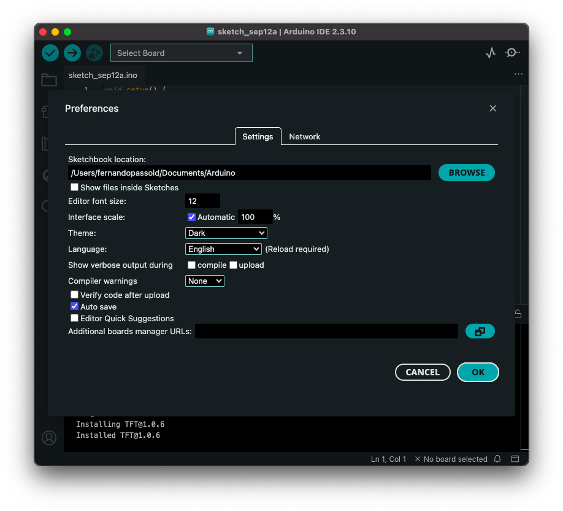
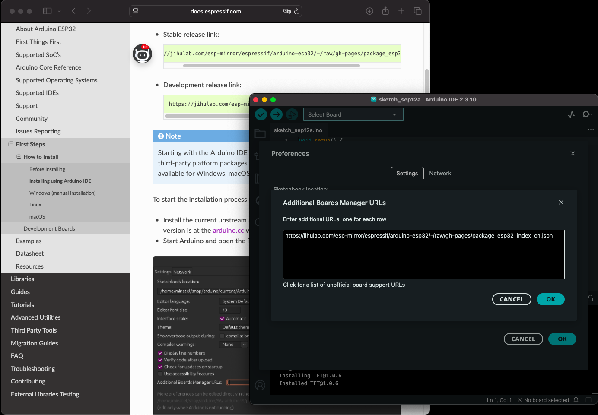
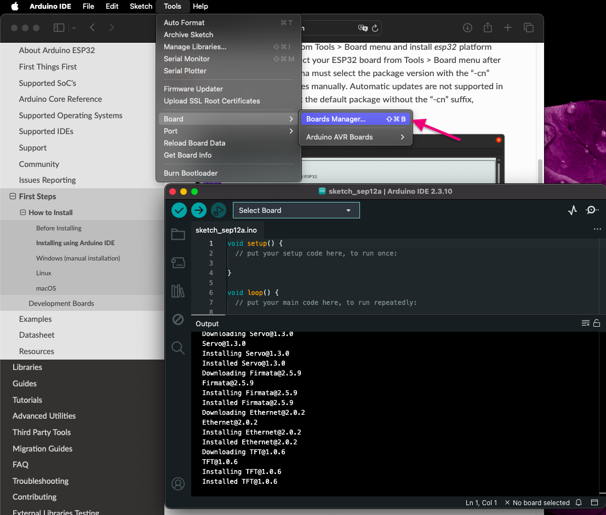
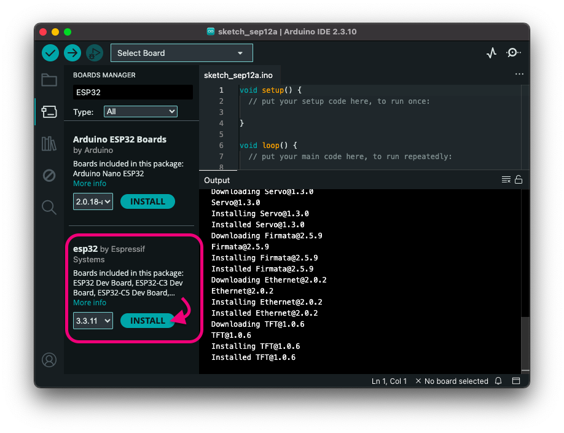
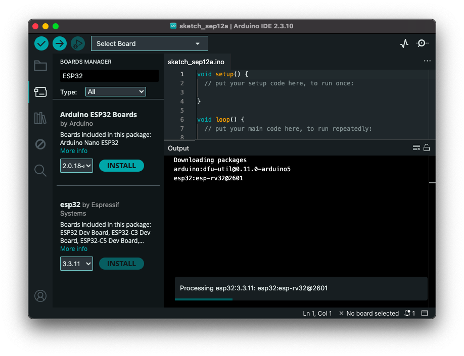
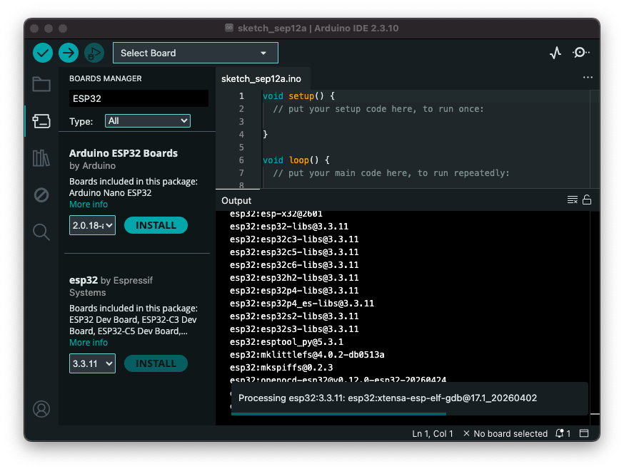
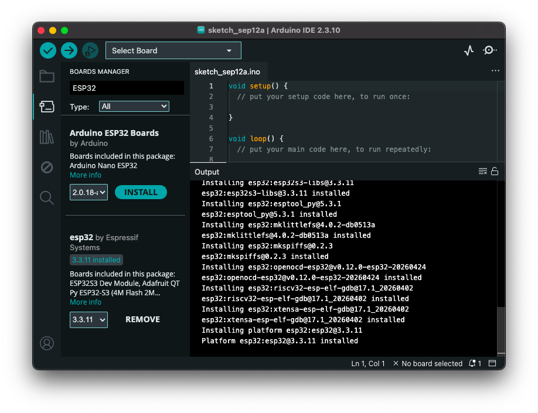
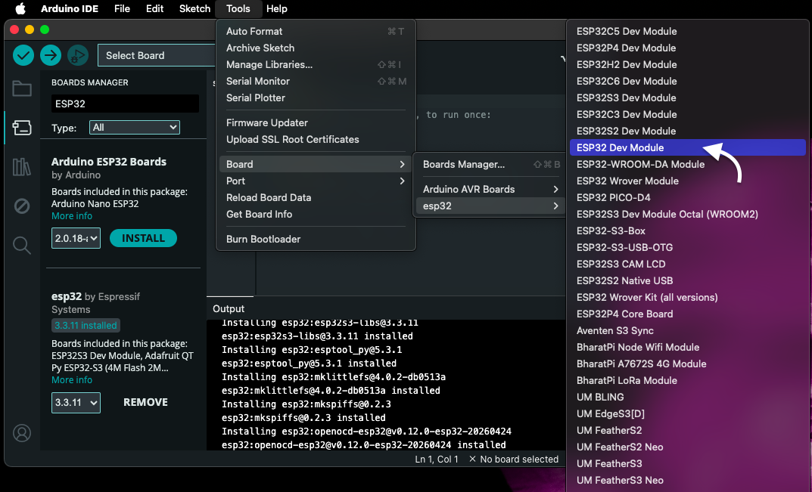
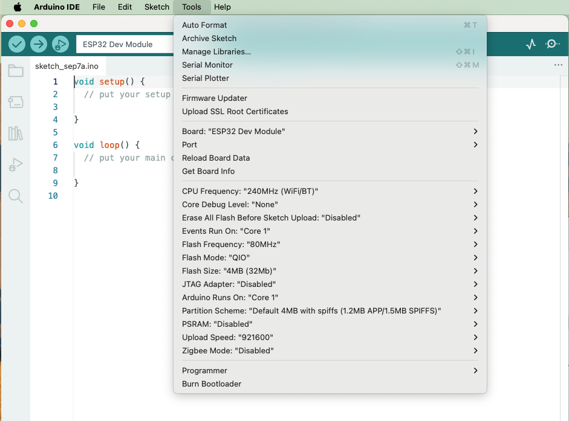

Usando Arduino-IDE com ESP32Instalação dos pacotes Espressif ESP-IDF usando Arduíno IDEArduino IDE com ESP32Identificação da PlacaSeleção da Placa CorretaParâmetros adicionais de hardware
Atenção: O EIM (Espressif Installation Manager) é apenas um assistente para instalação de ferramentas ESP-IDF e compilação usando terminal ou outras IDEs. Ele é necessário mas não é nenhuma IDE de programação.
Se você quer apenas programar o ESP32 em paz sem depender de ferramentas especias (brew, outras) e sem usar o VS Code, a sua melhor rota de fuga é a Arduino IDE.
Muitas pessoas associam o Arduino apenas a projetos básicos, mas a realidade pode ser outra:
O conselho de um colega desenvolvedor: Apague tudo o que você tentou instalar até agora para limpar o computador. Se o seu objetivo é ver o código rodando na placa sem travar uma batalha contra o macOS Sequoia, instale a Arduino IDE. É o caminho com menos resistência para o seu cenário atual.
Ref.: https://docs.espressif.com/projects/arduino-esp32/en/latest/getting_started.html#about-arduino-esp32
Guia oficial de instalação: https://docs.espressif.com/projects/arduino-esp32/en/latest/installing.html
Na IDE do Arduino selecione Ajustes/Preferências e busque pela opção “Additional boards manager URLs” na parte inferior da tela. Clique no botão semelhante à uma pasta, 📁:

Informe o endereço URL das bibliotecas da Espressif para a ESP32:
Algo como: https://espressif.github.io/arduino-esp32/package_esp32_index.json:

Depois volte para Menu Principal > Ferramentas > Placas > Gerenciador de Placas, e adicione suporte para a placas ESP32:

Selecione o suporte para placas ESP32 em “Select Board”, mas fornecido pela própria Espressif:

Uma vez selecionada a opção correta, a IDE deve começar a baixar os arquivos necessários:

Isto força a instalação de algumas bibliotecas:

Este processo pode demorar um pouco. Ao final, a tela deve ficar semelhante à mostrada abaixo:

Os dados observáveis da placa:
Com base nestas marcações, esta placa é oficialmente uma ESP32-DevKitC V4 equipada com o módulo ESP-WROOM-32U.
A indicação ESP32-32U na blindagem metálica confirma que o seu módulo é a versão 32U, que possui as mesmas especificações internas do ESP32 padrão, mas traz um conector IPEX (U.FL) para antena externa em vez da antena desenhada na própria placa.
Para selecionar e configurar essa versão corretamente na Arduino IDE, siga as instruções abaixo:
Acesse o menu Ferramentas (Tools) > Placa (Board) > ESP32 Arduino.
Procure e selecione a opção
ESP32 Dev Module
(essa é a opção genérica mais estável e recomendada para a linha DevKitC).
ESP32-WROOM-32D/32U DevKitC ou simplesmente ESP32-DevKitC. Ambas as opções funcionam perfeitamente.Por exemplo:

Após selecionar a placa, certifique-se de manter as seguintes propriedades padrão no menu Ferramentas:
80MHzDefault 4MB with spiffs (o módulo 32U padrão possui 4MB de memória Flash).921600 (se apresentar erros para carregar o código, reduza para 115200). [3] Se encontrar alguma mensagem de erro ao tentar transferir o código, me avise:
Por exemplo:

Fernando Passold, em 07/09/2026